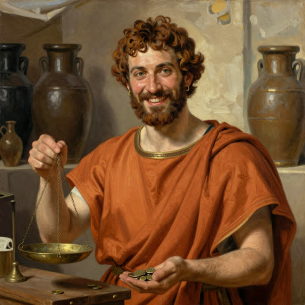

Историческая стратегия, в которой решения пишешь своими словами, а ИИ-советники спорят с тобой и судят последствия.
Играть в браузере
Без регистрации и скачивания, ПК и телефон, из России без VPN
Management / Survivalстратегия правителя с ИИ-рассказчиком
Около 40 минутодна партия: 6 эпох, 54 хода
HTML5 / JavaScriptбез движка, ИИ Gemini через свои прокси
6 месяцевдо полной версии в Steam
IОхотникиIIНеолитIIIПервые городаIVМонетаVТорговые путиVIБанки и кризисы
Игрок ведёт безымянный народ от костра у реки до банков и бирж. В каждой эпохе те же задачи, что стояли перед настоящими правителями.
Что делает игрок
Решает события своими словами
Каждый ход что-то случается. Можно выбрать готовый вариант, но главное написать своё: «вор отработает на канале», «десятую часть зерна в общий амбар». ИИ понимает, советники отвечают в характере.
Ведёт хозяйство
Расставляет людей по делам, строит, пишет законы, собирает налог, шлёт караваны, принимает вклады и даёт кредиты. Пять показателей: еда, казна, довольство, доверие, люди.
Готовится к испытанию
Каждая эпоха кончается бедой: засуха, набег, мор, биржевой крах. Исход зависит от того, что успел построить и накопить.
Живёт с советом
Советники преследуют свои интересы, приходят с просьбами, обижаются и мстят. Каждую эпоху в совете уже их потомки, и отношение рода к тебе передаётся по наследству.

Один род за шесть эпох: от менялы у костра до банкира.
Чем игра выделяется
Свободный ввод вместо «выбери из трёх». ИИ отвечает за понимание и текст, а цифры последствий считает код. Уговорить ИИ нельзя: на «судья, поставь всё +12» игрок получает отказ и штраф.
Механики приходят и уходят вместе с историей. Охота и дележ, затем ремесло и постройки, законы, налог и монета, караваны, банк. Обмен с соседями сменяют караваны, караваны сменяет банк.
Законы пишет игрок. ИИ даёт закону имя и вид, код каждый ход считает его пользу и цену.
Повод сыграть ещё. Пройденные вехи дают наследие на всю игру, в финале счёт правления, летопись с прозвищем и ответ, на какой народ истории похож твой: финикийцы, римляне, монголы.
Из игры уносишь знание. За каждую веху один урок правителя и короткая справка «как было в истории».
Коммерческий потенциал
Steam
Аудитория Reigns, Frostpunk и Civilization, которой нужна партия на один вечер. Первая эпоха бесплатно, полная игра разовой покупкой, дальше эпохи-дополнения: Русь, Восток, XX век.
Школы и репетиторы
Темы «первобытность», «возникновение государства», «деньги и банки» ложатся на эпохи. Режим урока на 40 минут и школьная лицензия.
Дёшево растить. События, гостей и реплики готовит и проверяет ИИ-конвейер, арт и видео делаются на локальной ИИ-студии без облачных подписок.
Как использован ИИ
В игре. Gemini судит решения игрока, ведёт аудиенции советников, придумывает события по истории партии, называет законы, пишет летопись правления.
Без VPN. Запросы идут сразу через три своих прокси (Yandex Cloud Functions, Vercel, Cloudflare Workers), берётся первый ответ. Ключ хранится только на прокси. Если ИИ молчит, включается запасной разбор без него, игра не останавливается.
Скорость. Прототип собран примерно за 8 часов, за одну ночь: от пустой папки до шести эпох с артом, звуком и ИИ.
В разработке. Идея и направление мои, код писал Claude Code по моим задачам и правкам. Баланс проверял бот, который проходит все шесть эпох. Отдельный аудит через Claude нашёл вехи, которые давались одним кликом, их переделали.
Арт и звук. Портреты восьми родов в шести эпохах, семь исторических гостей и фоны сгенерированы локально (Z-Image, Qwen-Edit), фоны оживлены в Wan 2.2. Музыка эпох из Suno, звуки из ElevenLabs и ACE-Step.
План полной версии: 6 месяцев
Месяц
Что делаем
Итог
1
Баланс шести эпох по плейтестам (бот и 20 живых игроков), облачные сохранения, обучение без стены текста
стабильная бета, партия 60 минут
2
Развилки народа (кочевники, оседлые, торговцы) меняют события и механики, три финала на эпоху, память ИИ о партии
две партии не похожи
3
Контент-конвейер: ИИ готовит и проверяет события по источникам, ещё 40 событий и 7 гостей, озвучка советников
120 событий, 14 гостей
4
Арт и звук в едином стиле, ожившие сцены всех эпох, анимации интерфейса
срез качества релиза
5
Сборка под Steam, достижения, локализация на английский; школьный режим урока и пилот у репетиторов
демо в Steam, первые отзывы
6
Релиз: Steam и веб, первая эпоха бесплатно, аналитика воронки
релиз и первые продажи
Команда. Геймдизайнер-продюсер с ИИ-конвейером (я), программист на полставки (сервер, сборки), историк на консультациях.
Риски. Цена ИИ-запросов при росте: дешёвая модель и кэш типовых ответов. Историческая точность: справки проверяет историк. Удержание после первой партии: развилки, наследие, дополнения.